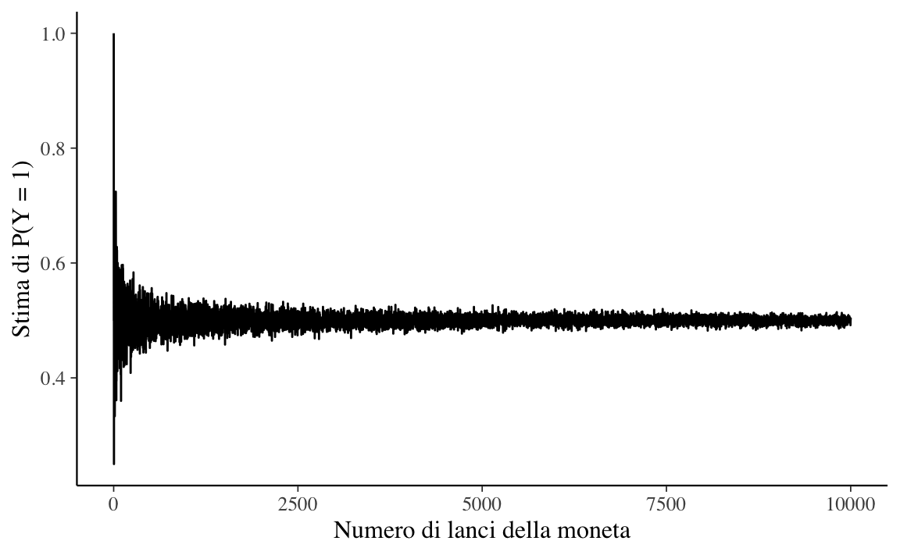
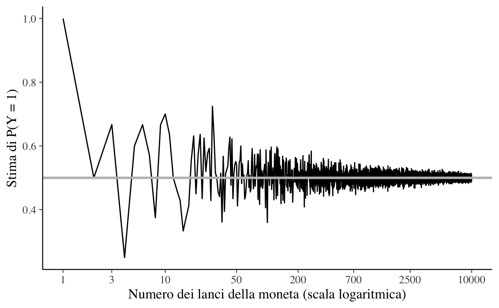

coin <- c(0, 1)1 La logica dell’incerto
In questa parte della dispensa verrà introdotta la teoria delle probabilità. Prima di entrare nei dettagli, cerchiamo di capire perché la probabilità sia cruciale per la ricerca scientifica.
La teoria delle probabilità è cruciale per la scienza perché la ricerca procede mediante l’inferenza induttiva. Non siamo mai completamente sicuri della verità di una proposizione (ipotesi, teoria): al valore di verità di una proposizione possiamo solo assegnare un giudizio probabilistico. L’approccio bayesiano è una scuola di pensiero che usa la probabilità per quantificare il grado di fiducia che può essere attribuito ad una proposizione. L’inferenza statistica bayesiana è un tipo di inferenza induttiva che ha lo scopo di quantificare la fiducia che si ha nell’ipotesi \(H\) dopo il verificarsi del dato d’evidenza \(E\). Per quantificare un tale grado di fiducia l’inferenza statistica bayesiana utilizza la teoria delle probabilità. Una comprensione dell’inferenza statistica bayesiana richiede dunque, preliminarmente, la conoscenze della teoria delle probabilità.
1.1 Che cos’è la probabilità?
La definizione della probabilità è un problema estremamente dibattuto ed aperto. Sono state fornite due possibili soluzioni al problema di definire il concetto di probabilità.
La natura della probabilità è “ontologica” (ovvero, basata sulla metafisica): la probabilità è una proprietà della della realtà, del mondo, di come sono le cose, indipendentemente dalla nostra esperienza. È una visione che qualcuno chiama “oggettiva”.
La natura della probabilità è “epistemica” (ovvero, basata sulla conoscenza): la probabilità si riferisce alla conoscenza che abbiamo del mondo, non al mondo in sé. Di conseguenza è detta, in contrapposizione alla precedente definizione, “soggettiva”.
In termini epistemici, la probabilità fornisce una misura della nostra incertezza sul verificarsi di un fenomeno, alla luce delle informazioni disponibili. Potremmo dire che c’è una “scala” naturale che ha per estremi il vero (1: evento certo) da una parte ed il falso (0: evento impossibile) dall’altra. La probabilità è la quantificazione di questa scala: descrive lo stato della nostra incertezza rispetto al contenuto di verità di una proposizione.
L’incertezza nelle nostre previsioni può sorgere per due ragioni fondamentalmente diverse. Il primo è dovuto alla nostra ignoranza delle cause nascoste sottostanti o dei meccanismi che generano i dati. Questa è appunto un’incertezza epistemica. Il secondo tipo di incertezza deriva dalla variabilità intrinseca dei fenomeni, che non può essere ridotta anche se raccogliamo più dati. Questa seconda forma di incertezza è talvolta chiamata aleatoria. Come esempio concreto, consideriamo il lancio di una moneta equilibrata. Sappiamo con certezza che la probabilità di testa è \(P = 0.5\), quindi non c’è incertezza epistemica, ma non questo non è sufficiente per prevedere con certezza il risultato – ovvero, l’incertezza aleatoria persiste anche in assenza di incertezza epistemica.
Nell’interpretazione frequentista, la probabilità \(P(E)\) rappresenta la frequenza relativa a lungo termine di un grande numero di ripetizioni di un esperimento casuale sotto le medesime condizioni. Viene stressata qui l’idea che ciò di cui parliamo è qualcosa che emerge nel momento in cui è possibile ripetere l’esperimento casuale tante volte sotto le medesime condizioni – sono invece esclusi gli eventi unici e irripetibili.
L’interpretazione bayesiana della probabilità fa invece ricorso ad una concezione più ampia, non legata al solo evento in sé ma che include anche il soggetto assegnante la funzione di probabilità. In pratica l’assegnazione di probabilità bayesiana viene effettuata dal decisore, in base alle proprie conoscenze a priori integrate con tutto il generico bagaglio culturale personale. In questo modo, la probabilità non sarà obbligatoriamente la stessa per tutti i soggetti, ma variarierà a seconda delle informazioni a disposizione, dell’esperienza personale e soprattutto del punto di vista proprio di ogni decisore ed è dunque assimilabile al “grado di fiducia” – in inglese degree of belief – di un dato soggetto, in un dato istante e con un dato insieme d’informazioni, circa l’accadere dell’evento \(E\). “[N]essuna scienza ci permetterà di dire: il tale fatto accadrà, andrà così e così, perché ciò è conseguenza di tale legge, e tale legge è una verità assoluta, ma tanto meno ci condurrà a concludere scetticamente: la verità assoluta non esiste, e quindi tale fatto può accadere e può non accadere, può andare così e può andare in tutt’altro modo, nulla io ne so. Quel che si potrà dire è questo: io prevedo che il tale fatto avverrà, e avverrà nel tal modo, perché l’esperienza del passato e l’elaborazione scientifica cui il pensiero dell’uomo l’ha sottoposta mi fanno sembrare ragionevole questa previsione” (Finetti, 1931).
L’impostazione bayesiana, sviluppata da Ramsey e de Finetti, riconduce l’assegnazione di probabilità allo scommettere sul verificarsi di un evento: la probabilità di un evento \(E\) è la quota \(p(E)\) che un individuo reputa di dover pagare ad un banco per ricevere “1” ovvero “0” verificandosi o non verificandosi \(E\).
Secondo De Finetti, le valutazioni di probabilità degli eventi devono rispondere ai principi di equità e coerenza. Una scommessa risponde al principio di equità se il ruolo di banco e giocatore sono scambiabili in ogni momento del gioco e sempre alle stesse condizioni. Una scommessa risponde al principio di coerenza se non vi sono combinazioni di scommesse che consentano (sia al banco che al giocatore) di realizzare perdite o vincite certe.
L’approccio definettiano dell’impostazione della scommessa si basa dunque sulle assunzioni di razionalità e coerenza del decisore, al quale è fatto esplicito divieto di effettuare scommesse a perdita o guadagno certo. Il decisore, proponendo la scommessa, deve essere disposto a scambiare il posto dello scommettitore con quello del banco.
Il metodo della scommessa, oltre che una definizione, fornisce un mezzo operativo di assegnazione della probabilità. Sulla base di questa definizione operativa, che si può ritenere ragionevolmente soddisfatta dal comportamento di un qualunque individuo che agisca in modo razionale in condizioni di incertezza, possono essere agevolmente dimostrate tutte le proprietà classiche della probabilità: essa non può assumere valori negativi, né può essere superiore all’unità; se \(E\) è un evento certo, la sua probabilità è 1; se invece \(E\) è un evento impossibile, la sua probabilità è 0.
I problemi posti dall’approccio definettiano riguardano l’arbitrarietà dell’assegnazione soggettività di probabilità la quale sembra negare la validità dell’intero costrutto teorico. In risposta a tale critica, i bayesiani sostengono che gli approcci oggettivisti alla probabilità nascondono scelte arbitrarie preliminari e sono basate su assunzioni implausibili. È molto più onesto esplicitare subito tutte le scelte arbitrarie effettuate nel corso dell’analisi in modo da controllarne coerenza e razionalità.
1.2 Variabili casuali e probabilità di un evento
Esaminiamo qui di seguito alcuni concetti di base della teoria delle probabilità, la quale può essere vista come un’estensione della logica.
1.2.1 Eventi e probabilità
Nella teoria delle probabilità il risultato “testa” nel lancio di una moneta è chiamato evento.1 Un evento, denotato da una variabile binaria, corrisponde ad uno stato del mondo che si verifica oppure no. Ad esempio, \(Y\) = 1 può denotare l’evento per cui il lancio di una moneta produce il risultato testa. Il funzionale \(P(Y)\) denota la probabilità con cui si ritiene che l’evento \(Y\) sia vero (o la proporzione di volte che si verifica tale evento osservando a lungo termine delle ripetizioni indipendenti di un esperimento casuale). Ad esempio, per il lancio di una moneta equilibrata, la probabilità dell’evento “il risultato del lancio della moneta è testa” è scritta come \(P(Y = 1) = 0.5.\)
Se la moneta è equilibrata dobbiamo anche avere \(P(Y = 0) = 0.5\). I due eventi Y = 1 e \(Y\) = 0 sono mutuamente esclusivi nel senso che non possono entrambi verificarsi contemporaneamente: \(P(Y = 1\; \land \; Y = 0) = 0.\) Gli eventi \(Y\) = 1 e \(Y\) = 0 di dicono esaustivi, nel senso che almeno uno di essi deve verificarsi e nessun altro tipo di evento è possibile. Nella notazione probabilistica, \(P(Y = 1\; \lor \; Y = 0) = 1.\) Il connettivo logico “o” (\(\lor\)) specifica eventi disgiunti, ovvero eventi che non possono verificarsi contemporaneamente (eventi incompatibili) e per i quali, perciò, la probabilità della loro congiunzione è \(P(A \; \land \; B) = 0\). Il connettivo logico “e” (\(\land\)), invece, specifica eventi congiunti, ovvero eventi che possono verificarsi contemporaneamente (eventi compatibili) e per i quali, perciò, la probabilità della loro congiunzione è \(P(A \; \land \; B) > 0\). La probabilità del verificarsi di due eventi congiunti \(A\) e \(B\) si può denotare, in maniera equivalente, con la notazione precedente, oppure con \(P(A \cap B)\), oppure con \(P(A, B)\).
Si richiede che \(0 \leq P(A) \leq 1\), dove \(P(A) = 0\) denota l’evento impossibile e \(P(A) = 1\) denota l’evento certo. Scriviamo \(P(\lnot A)\) o \(P(\bar{A})\) per denotare la probabilità che l’evento \(A\) non avvenga; questa probabilità è definita come \(P(\bar{A}) = 1 − P(A)\).
1.2.2 Spazio campione e risultati possibili
Anche se il lancio di una moneta produce sempre uno specifico risultato nel mondo reale, possiamo anche immaginare i possibili risultati alternativi che si sarebbero potuti osservare. Quindi, anche se in uno specifico lancio la moneta dà testa (\(Y\) = 1), possiamo immaginare la possibilità che il lancio possa avere prodotto croce (\(Y\) = 0). Tale ragionamento controfattuale è la chiave per comprendere la teoria delle probabilità e l’inferenza statistica.
I risultati possibili che si possono osservare come conseguenza del lancio di una moneta determinano i valori possibili che la variabile casuale può assumere. L’insieme \(\Omega\) di tutti i risultati possibili è chiamato spazio campione (sample space). Lo spazio campione può essere concettualizzato come un’urna contenente una pallina per ogni possibile risultato del lancio della moneta. Su ogni pallina è scritto il valore della variabile casuale. Uno specifico lancio di una moneta – ovvero, l’osservazione di uno specifico valore di una variabile casuale – è chiamato esperimento casuale.
Il lancio di un dado ci fornisce l’esempio di un altro esperimento casuale. Supponiamo di essere interessati all’evento “il lancio del dado produce un numero dispari”. Un evento seleziona un sottoinsieme dello spazio campione: in questo caso, l’insieme dei risultati \(\{1, 3, 5\}\). Se esce 3, per esempio, diciamo che si è verificato l’evento “dispari” (ma l’evento “dispari” si sarebbe anche verificato anche se fosse uscito 1 o 5).
1.3 Variabili casuali
Sia \(Y\) il risultato del lancio di moneta equilibrata, non di un generico lancio di una moneta, ma un’istanza specifica del lancio di una specifica moneta in un dato momento. Definita in questo modo, \(Y\) è una variabile casuale, ovvero una variabile i cui valori non possono essere previsti con esattezza. Se la moneta è equilibrata, c’è una probabilità del 50% che il lancio della moneta dia come risultato “testa” e una probabilità del 50% che dia come risultato “croce”. Per facilitare la trattazione, le variabili casuali assumono solo valori numerici. Per lo specifico lancio della moneta in questione, diciamo, ad esempio, che la variabile casuale \(Y\) assume il valore 1 se esce testa e il valore 0 se esce croce.
Una variabile casuale può essere discreta o continua. Una variabile casuale discreta può assumere un numero finito di valori \(x_1, \dots ,x_n\), in corrispondenza degli eventi \(E_i, \dots, E_n\) che si verificano con le rispettive probabilità \(p_1, \dots, p_n\). Un esempio è il punteggio totale di un test psicometrico costituito da item su scala Likert. Invece un esempio di una variabile casuale continua è la distanza tra due punti, che può assumere infiniti valori all’interno di un certo intervallo. L’insieme \(S\) dei valori che la variabile casuale può assumere è detto spazio dei valori o spazio degli stati.
La caratteristica fondamentale di una variabile casuale è data dall’insieme delle probabilità dei suoi valori, detta distribuzione di probabilità. Nel seguito useremo la notazione \(P(\cdot)\) per fare riferimento alle distribuzioni di probabilità delle variabili casuali discrete e \(p(\cdot)\) per fare riferimento alla densità di probabilità delle variabili casuali continue. In questo contesto, l’insieme dei valori che la variabile casuale può assumere è detto supporto della sua distribuzione di probabilità. Il supporto di una variabile casuale può essere finito (come nel caso di una variabile casuale uniforme di supporto \([a, b]\)) o infinito (nel caso di una variabile causale gaussiana il cui supporto coincide con la retta reale).
1.4 Usare la simulazione per stimare le probabilità
In questa dispensa verrà adottata l’interpretazione bayesiana delle probabilità. Tuttavia, le regole di base della teoria delle probabilità sono le stesse, indipendentemente dall’interpretazione adottata. Pertanto, negli esempi seguenti, possiamo utilizzare la simulazione per stimare le probabilità degli eventi in un modo diretto, ovvero mediante la generazione di molteplici osservazioni delle variabili casuali derivate dagli eventi di interesse.
Ad esempio, per simulare in R il lancio di una moneta equilibrata iniziamo con il definire un vettore che contiene i risultati possibili del lancio della moneta (ovvero i valori possibili della variabile casuale \(Y\)):
L’estrazione casuale di uno di questi due possibili valori (ovvero, la simulazione di uno specifico lancio di una moneta) si realizza con la funzione sample():
sample(coin, size = 1)
#> [1] 0In maniera equivalente, la stessa operazione si può realizzare mediante l’istruzione
rbinom(1, 1, 0.5)
#> [1] 1Supponiamo di ripetere questo esperimento casuale 100 volte e di registrare i risultati così ottenuti. La stima della probabilità dell’evento \(P(Y = 1)\) è data dalla frequenza relativa del numero di volte in cui abbiamo osservato l’evento di interesse (\(Y = 1\)):
Ripetiamo questa procedura 10 volte.
for(i in 1:10) {
flip_coin(100)
}
#> estimated P[Y = 1] = 0.44
#> estimated P[Y = 1] = 0.52
#> estimated P[Y = 1] = 0.46
#> estimated P[Y = 1] = 0.57
#> estimated P[Y = 1] = 0.47
#> estimated P[Y = 1] = 0.46
#> estimated P[Y = 1] = 0.48
#> estimated P[Y = 1] = 0.49
#> estimated P[Y = 1] = 0.47
#> estimated P[Y = 1] = 0.62Dato che la moneta è equilibrata, la stima delle probabilità dell’evento \(P(Y = 1)\) è simile a al valore che ci aspettiamo, ovvero \(P(Y = 1) = 0.5\), ma il risultato ottenuto nelle simulazioni non è esatto. Proviamo ad aumentare il numero di lanci in ciascuna simulazione:
for(i in 1:10) {
flip_coin(1000)
}
#> estimated P[Y = 1] = 0.497
#> estimated P[Y = 1] = 0.529
#> estimated P[Y = 1] = 0.493
#> estimated P[Y = 1] = 0.511
#> estimated P[Y = 1] = 0.506
#> estimated P[Y = 1] = 0.52
#> estimated P[Y = 1] = 0.49
#> estimated P[Y = 1] = 0.495
#> estimated P[Y = 1] = 0.489
#> estimated P[Y = 1] = 0.496In questo secondo caso, gli errori tendono ad essere più piccoli che nel caso precedente. Cosa succede se in ciascuna simulazione esaminiamo i risultati di 10,000 lanci della moneta?
for(i in 1:10) {
flip_coin(1e4)
}
#> estimated P[Y = 1] = 0.4885
#> estimated P[Y = 1] = 0.4957
#> estimated P[Y = 1] = 0.4902
#> estimated P[Y = 1] = 0.5032
#> estimated P[Y = 1] = 0.5048
#> estimated P[Y = 1] = 0.4931
#> estimated P[Y = 1] = 0.4965
#> estimated P[Y = 1] = 0.499
#> estimated P[Y = 1] = 0.4979
#> estimated P[Y = 1] = 0.4973Ora le stime ottenute sono molto vicine alla vera probabilità che vogliamo stimare (cioè 0.5, perché la moneta è equilibrata).
I risultati delle simulazioni precedenti pongono dunque il problema di determinare quale sia il numero di lanci di cui abbiamo bisogno per assicurarci che le stime siano accurate (ovvero, vicine al valore corretto della probabilità)
1.5 La legge dei grandi numeri
La visualizzazione mediante grafici contribuisce alla comprensione dei concetti della statistica e della teoria delle probabilità. Un modo per descrivere ciò che accade all’aumentare del numero \(M\) di ripetizioni del lancio della moneta consiste nel registrare la stima della probabilità dell’evento \(P(Y = 1)\) in funzione del numero di ripetizioni dell’esperimento casuale per ogni \(m \in 1:M\). Possiamo ottenere un grafico dell’andamento della stima di \(P(Y = 1)\) in funzione di \(m\) nel modo seguente:
nrep <- 1e4
estimate <- rep(NA, nrep)
flip_coin <- function(m) {
y <- rbinom(m, 1, 0.5)
phat <- sum(y) / m
phat
}
for(i in 1:nrep) {
estimate[i] <- flip_coin(i)
}
d <- tibble(
n = 1:nrep,
estimate
)
d %>%
ggplot(aes(x = n, y = estimate)) +
geom_line() +
labs(
x = "Numero di lanci della moneta",
y = "Stima di P(Y = 1)"
)
La Figura 1.1, quando è espressa su una scala lineare, non rivela chiaramente l’andamento della simulazione. Imponiamo dunque una scala logaritmica sull’asse delle ascisse (\(x\)). Su scala logaritmica, i valori tra 1 e 10 vengono tracciati all’incirca con la stessa ampiezza che si osserva tra i valori 50 e 700, eccetera.
d %>%
ggplot(aes(x = n, y = estimate)) +
geom_line() +
geom_hline(
yintercept = 0.5, color = "gray", size = 1
) +
scale_x_log10(
breaks = c(
1, 3, 10, 50, 200,
700, 2500, 10000
)
) +
labs(
x = "Numero dei lanci della moneta (scala logaritmica)",
y = "Stima di P(Y = 1)"
)
La legge dei grandi numeri ci dice che, all’aumentare del numero di ripetizioni dell’esperimento casuale, la media dei risultati ottenuti tende al valore atteso, man mano che vengono eseguite più prove. Nella figura Figura 1.2 vediamo infatti che, all’aumentare del numero M di lanci della moneta, la stima di \(P(Y = 1)\) converge al valore 0.5.
1.6 Variabili casuali multiple
Le variabili casuali non esistono isolatamente. Abbiamo iniziato con una sola variabile casuale \(Y\) che rappresenta il risultato di un singolo, specifico lancio di una moneta equlibrata. Ma supponiamo ora di lanciare la moneta tre volte. I risultati di ciascuno dei tre lanci possono essere rappresentati da una diversa variabile casuale, ad esempio, \(Y_1 , Y_2 , Y_3\). Possiamo assumere che ogni lancio sia indipendente, ovvero che non dipenda dal risultato degli altri lanci. Per ciascuna di queste variabili \(Y_n\), con \(n \in 1:3\), abbiamo che \(P(Y_n =1)=0.5\) e \(P(Y_n =0)=0.5\).
È possibile combinare più variabili casuali usando le operazioni aritmetiche. Se \(Y_1 , Y_2, Y_3\) sono variabili casuali che rappresentano tre lanci di una moneta equilibrata (o un lancio di tre monete equilibrate), possiamo definire la somma di tali variabili casuali come
\[ Z = Y_1 + Y_2 + Y_3. \]
Possiamo simulare i valori assunti dalla variabile casuale Z simulando i valori di \(Y_1, Y_2, Y_3\) per poi sommarli.
ovvero,
oppure, ancora più semplicemente:
Possiamo ripetere questa simulazione \(M = 1e5\) volte:
e calcolare una stima della probabilità che la variabile casuale \(Z\) assuma ciascuno dei possibili valori 0, 1, 2, 3:
table(z) / M
#> z
#> 0 1 2 3
#> 0.12585 0.37495 0.37480 0.12440Nel caso di 4 monete equilibrate, avremo:
Una variabile casuale le cui modalità possono essere costituite solo da numeri interi è detta variabile casuale discreta:
\[ \mathbb{Z} = \dots, -2, -1, 0, 1, 2, \dots \]
1.7 Funzione di massa di probabilità
È conveniente avere una funzione che associa una probabilità a ciascun possibile valore di una variabile casuale. In generale, ciò è possibile se e solo se la variabile casuale è discreta, così com’è stata definita nel Paragrafo precedente. Ad esempio, se consideriamo \(Z = Y_1 + \dots + Y_4\) come, ad esempio, il numero di risultati “testa” in 4 lanci della moneta, allora possiamo definire la seguente funzione:
\[ \begin{array}{rclll} p_Z(0) & = & 1/16 & & \mathrm{TTTT} \\ p_Z(1) & = & 4/16 & & \mathrm{HTTT, THTT, TTHT, TTTH} \\ p_Z(2) & = & 6/16 & & \mathrm{HHTT, HTHT, HTTH, THHT, THTH, TTTH} \\ p_Z(3) & = & 4/16 & & \mathrm{HHHT, HHTH, HTHH, THHH} \\ p_Z(4) & = & 1/16 & & \mathrm{HHHH} \end{array} \]
Il lancio di quattro monete può produrre 16 risultati possibili. Dato che i lanci sono indipendenti, se le monete sono equilibrate ogni possibile risultato è ugualmente probabile. Nella tabella in alto, le sequenze dei risultati possibili del lancio delle 4 monete sono riportate nella colonna più a destra. Le probabilità si ottengono dividendo il numero di sequenze che producono lo stesso numero di eventi testa per il numero dei risultati possibili.
Le sequenze come \(\mathrm{TTTT}\), \(\mathrm{HTTT}\), ecc. sono chiamate “eventi elementari” (corrispondono ad un possibile esito dell’esperimento casuale). L’evento \(Z = u\), con \(u \in 0 \dots, 4\) è un “evento composto”, il quale può essere costituito da più eventi elementari.
La funzione \(p_Z\) è stata costruita per associare a ciascun valore \(u\) della variabile casuale \(Z\) la probabilità dell’evento \(Z = u\). Convenzionalmente, queste probabilità sono scritte come
\[ P_Z(z) = P(Z = z). \]
La parte a destra dell’uguale si può leggere come: “la probabilità che la variabile casuale \(Z\) assuma il valore \(z\)”. Una funzione definita come sopra è detta funzione di massa di probabilità della variabile casuale \(Z\). Ad ogni variabile casuale discreta è associata un’unica funzione di massa di probabilità.
Una rappresentazione grafica della stima della funzione di massa di probabilità per l’esperimento casuale del lancio di quattro monete equilibrate è fornita nella Figura 1.3.
set.seed(1234)
M <- 1e5
nflips <- 4
u <- rbinom(M, nflips, 0.5)
x <- 0:nflips
y <- rep(NA, nflips + 1)
for (n in 0:nflips) {
y[n + 1] <- sum(u == n) / M
}
bar_plot <-
data.frame(Z = x, count = y) %>%
ggplot(aes(x = Z, y = count)) +
geom_bar(stat = "identity") +
scale_x_continuous(
breaks = 0:4,
labels = c(0, 1, 2, 3, 4)
) +
labs(
y = "Probabilità stimata P(Z = z)"
)
bar_plot
Se \(A\) è un sottoinsieme della variabile casuale \(Z\), allora denotiamo con \(P_{z}(A)\) la probabilità assegnata ad \(A\) dalla distribuzione \(P_{z}\). Mediante una distribuzione di probabilità \(P_{z}\) è dunque possibile determinare la probabilità di ciascun sottoinsieme \(A \subset Z\) come
\[\begin{equation} P_{z}(A) = \sum_{z \in A} P_{z}(Z = z). \end{equation}\]Una funzione di massa di probabilità soddisfa le proprietà
- \(0 \leq P(X=x) \leq 1\),
- \(\sum_{x \in X} P(x) = 1\).
Nel caso dell’esempio discusso nel Paragrafo @ref(sec:fun-mass-prob), la probabilità che la variabile casuale \(Z\) sia un numero dispari è
\[ P(\text{Z è un numero dispari}) = P_{z}(Z = 1) + P_{z}(Z = 3) = \frac{4}{16} + \frac{4}{16} = \frac{1}{2}. \]
1.7.1 Funzione di ripartizione
Data una variabile casuale discreta \(X\) possiamo calcolare la probabilità che \(X\) non superi un certo valore \(x\), ossia la sua funzione di ripartizione. Poichè \(X\) assume valori discreti possiamo cumulare le probabilità mediante una somma:
\[ F(x_k) = P(X \leq x_k) = \sum_{x \leq x_k} P(x). \]
Commenti e considerazioni finali
In questo capitolo abbiamo visto come si costruisce lo spazio campione di un esperimento casuale, quali sono le proprietà di base della probabilità e come si assegnano le probabilità agli eventi definiti sopra uno spazio campione discreto. Abbiamo anche introdotto le nozioni di variabile casuale, ovvero di una variabile che assume i suoi valori in maniera casuale. Abbiamo descritto il modo di specificare la probabilità con cui sono una variabile casuale assume i suoi differenti valori, ovvero la funzione di ripartizione \(F(X) = P(X < x)\) e la funzione di massa di probabilità.
Per un ripasso delle nozioni di base della teoria degli insiemi, si veda l’Appendice @ref(insiemistica).↩︎